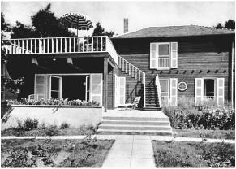

and even Elsa.
and even Elsa.
Einstein’s house in Caputh near Berlin
Einstein wanted some solitude for his fiftieth birthday, a refuge from publicity. So in March 1929 he fled once again, as he had during the publication of his unified field theory paper of a few months earlier, to the gardener’s cottage of an estate on the Havel River owned by Janos Plesch, a flamboyant and gossipy Hungarian-born celebrity doctor who had added Einstein to his showcase collection of patient-friends.
For days he lived by himself, cooking his own meals, while journalists and official well-wishers searched for him. His whereabouts became a matter of newspaper speculation. Only his family and assistant knew where he was, and they refused to tell even close friends.
Early on the morning of his birthday, he walked from this hide-away, which had no phone, to a nearby house to call Elsa. She started to wish him well on reaching the half-century mark, but he interrupted. “Such a fuss about a birthday,” he laughed. He was phoning about a matter involving physics, not the merely personal. He had made a small mistake in some calculations he had given to his assistant Walther Mayer, he told her, and he wanted her to take down the corrections and pass them along.
Elsa and her daughters came out that afternoon for a small, private celebration. She was dismayed to find him in his oldest suit, which she had hidden. “How did you manage to find it?” she asked.
“Ah,” he replied, “I know all about those hiding places.”1
The New York Times, as intrepid as ever, was the only paper that managed to track him down. A family member later recalled that Einstein’s angry look drove the reporter away. That was not true. The reporter was smart and Einstein, despite his feigned fury, was as accommodating as usual. “Einstein Is Found Hiding on His Birthday” was the paper’s headline. He showed the reporter a microscope he had been given as a gift, and the paper reported that he was like a “delighted boy” with a new toy.2
From around the world came other gifts and greetings. The ones that moved him the most were from ordinary people. A seamstress had sent him a poem, and an unemployed man had saved a few coins to get him a small packet of tobacco. The latter gift brought tears to his eyes and was the first for which he wrote a thank-you letter.3
Another birthday gift caused more problems. The city of Berlin, at the suggestion of the ever-meddling Dr. Plesch, decided to honor its most famous citizen by giving him lifelong rights to live in a country house that was part of a large lakeside estate that the city had acquired. There he would be able to escape, sail his wooden boat, and scribble his equations in serenity.
It was a generous and gracious gesture. It was also a welcome one. Einstein loved sailing and solitude and simplicity, but he owned no weekend retreat and had to store his sailboat with friends. He was thrilled to accept.
The house, in a classical style, was nestled in a park near the village of Cladow on a lake of the Havel River. Pictures of it appeared in the papers, and a relative called it “the ideal residence for a person of creative intellect and a man fond of sailing.” But when Elsa went to inspect it, she found still living there the aristocratic couple who sold the estate to the city. They claimed that they had retained the right to live on the property. A study of the documents proved them right, and they could not be evicted.
So the city decided to give the Einsteins another part of the estate on which they could build their own home. But that, too, violated the city’s purchase agreement. Pressure and publicity only hardened the resolve of the original family to block the Einsteins from building on the land, and it became an embarrassing front-page fiasco, especially after a third suggested alternative also proved unsuitable.
Finally it was decided that the Einsteins should simply find their own piece of land, and the city would buy it. So Einstein picked out a parcel, owned by some friends, farther out of town near a village just south of Potsdam called Caputh. It was in a sylvan spot between the Havel and a dense forest, and Einstein loved it. The mayor accordingly asked the assembly of city deputies to approve spending 20,000 marks to buy the property as the fiftieth birthday gift to Einstein.
A young architect drew up plans, and Einstein bought a small garden plot nearby. Then politics intervened. In the assembly, the right-wing German Nationalists objected, delayed the vote, and insisted that the proposal be put on a future agenda for a full debate. It became clear that Einstein personally would become the focus of that debate.
So he wrote a letter, tinged with amusement, declining the gift. “Life is very short,” he told the mayor, “while the authorities work slowly. My birthday is already past, and I decline the gift.” The headline the next day in the Berliner Tageblatt newspaper read, “Public Disgrace Complete / Einstein Declines.”4
By this point, the Einsteins had fallen in love with the plot of land in Caputh, negotiated its purchase, and had a design for a house to build upon it. So they went ahead and bought it with their own money. “We have spent most of our savings,” Elsa complained, “but we have our land.”
The house they built was simple, with polished wood panels inside and unvarnished planks showing to the outside. Through a large picture window was a serene view of the Havel. Marcel Breuer, the famed Bauhaus furniture designer, had offered to do the interior design, but Einstein was a man of conservative tastes. “I am not going to sit on furniture that continually reminds me of a machine shop or a hospital operating room,” he said. Some leftover heavy pieces from the Berlin apartment were used instead.
Einstein’s room on the ground floor had a spartan wooden table, a bed, and a small portrait of Isaac Newton. Elsa’s room was also downstairs, with a shared bathroom between them. Upstairs were small rooms with sleeping niches for her two daughters and their maid. “I like living in the new little wooden house enormously, even though I am broke as a result,” he wrote his sister shortly after moving in. “The sailboat, the sweeping view, the solitary fall walks, the relative quiet—it is a paradise.”5
There he sailed the new twenty-three-foot boat his friends had given him for his birthday, the Tümmler, or Dolphin, which was built fat and solid to his specifications. He liked to go out on the water alone, even though he didn’t swim. “He was absurdly happy as soon as he reached the water,” recalled a visitor.6 For hours he would let the boat drift and glide aimlessly as he gently toyed with the rudder. “His scientific thinking, which never leaves him even on the water, takes on the nature of a daydream,” according to one relative. “Theoretical thinking is rich in imagination.”7
Throughout Einstein’s life, his relationships with women seemed subject to untamed forces. His magnetic appeal and soulful manner repeatedly attracted women. And even though he usually shielded himself from entangling commitments, he occasionally found himself caught in the swirl of a passionate attraction, just as he had been with Mileva Mari and even Elsa.
In 1923, after marrying Elsa, he had fallen in love with his secretary, Betty Neumann. Their romance was serious and passionate, according to newly revealed letters. That fall, while on a visit to Leiden, he wrote to suggest that he might take a job in New York, and she could come as his secretary. She would live there with him and Elsa, he fantasized. “I will convince my wife to allow this,” he said. “We could live together forever. We could get a large house outside New York.”
She replied by ridiculing both him and the idea, which prompted him to concede how much of a “crazy ass” he had been. “You have more respect for the difficulties of triangular geometry than I, old mathematicus, have.”8
He finally terminated their romance with the lament that he “must seek in the stars” the true love that was denied to him on earth. “Dear Betty, laugh at me, the old donkey, and find somebody who is ten years younger than me and loves you just as much as I do.”9
But the relationship lingered. The following summer, Einstein went to see his sons in southern Germany, and from there he wrote to his wife that he could not visit her and her daughters, who were at a resort nearby, because that would be “too much of a good thing.” At the same time, he was writing Betty Neumann saying that he was going secretly to Berlin, but she should not tell anyone because if Elsa found out she “will fly back.”10
After he built the house in Caputh, a succession of women friends visited him there, with Elsa’s grudging acquiescence. Toni Mendel, a wealthy widow with an estate on the Wannsee, sometimes came sailing with him in Caputh, or he would pilot his boat up to her villa and stay late into the night playing the piano. They even went to the theater together in Berlin occasionally. Once when she picked Einstein up in her chauffeured limousine, Elsa got into a furious fight with him and would not give him any pocket money.
He also had a relationship with a Berlin socialite named Ethel Michanowski. She tagged along on one of his trips to Oxford, in May 1931, and apparently stayed in a local hotel. He composed a five-line poem for her one day on a Christ Church college notecard. “Long-branched and delicately strung, Nothing that will escape her gaze,” it began. A few days later she sent him an expensive present, which was not appreciated.“The small package really angered me,” he wrote.“You have to stop sending me presents incessantly ... And to send something like that to an English college where we are surrounded by senseless affluence anyway!”11
When Elsa found out that Michanowski had visited Einstein in Oxford, she was furious, particularly at Michanowski for misleading her about where she was going. Einstein wrote from Oxford to tell Elsa to calm down. “Your dismay toward Frau M is totally groundless because she behaved completely according to the best Jewish-Christian morality,” he said. “Here is the proof: 1) What one enjoys and doesn’t harm others, one should do. 2) What one doesn’t enjoy and only aggravates others, one should not do. Because of #1, she came with me, and because of #2 she didn’t tell you anything about it. Isn’t that impeccable behavior?” But in a letter to Elsa’s daughter Margot, Einstein claimed that Michanowski’s pursuit was unwanted. “Her chasing me is getting out of control,” he wrote Margot, who was Michanowski’s friend. “I don’t care what people are saying about me, but for mother [Elsa] and for Frau M, it is better that not every Tom, Dick and Harry gossip about it.”12
In his letter to Margot, he insisted that he was not particularly attached to Michanowski nor to most of the other women who flirted with him. “Of all the women, I am actually attached only to Frau L, who is perfectly harmless and respectable,” he said, not so reassuringly.13 That was a reference to a blond Austrian named Margarete Lebach, with whom he had a very public relationship. When Lebach visited Caputh, she brought pastries for Elsa. But Elsa, understandably, could not abide her, and she took to leaving the village to go shopping in Berlin on the days that Lebach came.
On one visit, Lebach left a piece of clothing in Einstein’s sailboat, which caused a family row and prompted Elsa’s daughter to urge her to force Einstein to end the relationship. But Elsa was afraid that her husband would refuse. He had let it be known that he believed that men and women were not naturally monogamous.14 In the end, she decided that she was better off preserving what she could of their marriage. In other respects, it suited her aspirations.15
Elsa liked her husband, and she also revered him. She realized that she must accept him with all of his complexities, especially since her life as Mrs. Einstein included much that made her happy. “Such a genius should be irreproachable in every respect,” she told the artist and etcher Hermann Struck, who did Einstein’s portrait around the time of his fiftieth birthday (as he had done a decade earlier). “But nature does not behave this way. Where she gives extravagantly, she takes away extravagantly.”The good and the bad had to be accepted as a whole. “You have to see him all of one piece,” she explained. “God has given him so much nobility, and I find him wonderful, although life with him is exhausting and complicated, and not only in one way but in others.”16
The most important other woman in Einstein’s life was one who was completely discreet, protective, loyal, and not threatening to Elsa. Helen Dukas came to work as Einstein’s secretary in 1928, when he was confined to bed with an inflamed heart. Elsa knew her sister, who ran the Jewish Orphans Organization, of which Elsa was honorary president. Elsa interviewed Dukas before allowing her to meet Einstein, and she felt that Dukas would be trustworthy and, more to the point, safe in all respects. She offered Dukas the job even before she had met Einstein.
When Dukas, then 32, was ushered into Einstein’s sickroom in April 1928, he stretched out his hand and smiled, “Here lies an old child’s corpse.” From that moment until his death in 1955—indeed until her own death in 1982—the never-married Dukas was fiercely protective of his time, his privacy, his reputation, and later his legacy. “Her instincts were as infallible and straightforward as a magnetic compass,” George Dyson later declared. Although she could display a pleasant smile and lively directness with those she liked, she was generally austere, hard-boiled, and at times quite prickly.17
More than a secretary, she could appear to intrusive outsiders as Einstein’s pit bull—or, as he referred to her, his Cerberus, the guard dog at the gates of his own little kingdom of Hades. She would keep journalists at bay, shield him from letters she thought a waste of his time, and cover up any matters that she decreed should remain private. After a while, she became like a member of the family.
Another frequent visitor was a young mathematician from Vienna, Walther Mayer, who became an assistant and, in Einstein’s words, “the calculator.” Einstein collaborated with him on some unified field theory papers, and he called him “a splendid fellow who would have long had a professorship if he were not a Jew.”18
Even Mileva Mari, who had gone back to using her maiden name after the divorce, started using the name Einstein again and was able to establish a strained but workable relationship with him. When he visited South America, he brought her back baskets of cactuses. Since she loved the plants, it was presumably meant as an amicable gift. On his visits to Zurich, he stayed at her apartment occasionally.
He even invited her to stay with him and Elsa when she came to Berlin, an arrangement that likely would have made every single person involved uncomfortable. But she wisely stayed with the Habers instead. Their relationship had improved so much, he told her, that he was now surprising his friends by recounting how well they were getting along. “Elsa is also happy that you and the boys are not hostile to her anymore,” he added.19
Their two sons, he told Mari, were the best part of his inner life, a legacy that would remain after the clock of his own body had worn down. Despite this, or because of it, his relationship with his sons remained fraught with tensions. This was particularly true when Hans Albert decided to get married.
As if the gods wished to extract their revenge, the situation was similar to the one Einstein had put his own parents through when he decided to marry Mileva Mari. Hans Albert had fallen in love, while studying at the Zurich Polytechnic, with a woman nine years his senior named Frieda Knecht. Less than five feet tall, she was plain and had an abrupt manner but was very smart. Both Mari and Einstein, reunited by this cause, agreed that she was scheming, unattractive, and would likely produce physically unsuitable offspring. “I tried my best to convince him that marrying her would be crazy,” he wrote Mari. “But it seems like he is totally dependent on her, so it was in vain.”20
Einstein assumed that his son had been ensnared because he was shy and inexperienced with women. “She was the one to grab you first, and now you consider her to be the embodiment of femininity,” he wrote Hans Albert. “That is the well-known way that women take advantage of unworldly people.” So he suggested that an attractive woman would remedy such problems.
But Hans Albert was as stubborn as his father had been twenty-five years earlier, and he was determined to marry Frieda. Einstein conceded that he couldn’t stop him, but he urged his son to promise not to have children. “And should you ever feel like you have to leave her, you should not be too proud to come talk to me,” Einstein wrote. “After all, that day will come.”21
Hans Albert and Frieda married in 1927, had children, and remained married until her death thirty-one years later. As Evelyn Einstein, their adopted daughter, recalled years later, “Albert had such a hell of a time with his parents over his own marriage that you would think he would have had the sense not to interfere with his son’s. But no. When my father went to marry my mother, there was explosion after explosion.”22
Einstein expressed his dismay about Hans Albert’s marriage in letters to Eduard. “The deterioration of the race is a serious problem,” Einstein wrote. “That is why I cannot forgive [Hans] Albert his sin. I instinctively avoid meeting him, because I cannot show him a happy face.”23
But within two years, Einstein had begun to accept Frieda. The couple came to visit him in the summer of 1929, and he reported back to Eduard that he had made his peace. “She made a better impression than I had feared,” he wrote. “He is really sweet with her. God bless those rose-colored spectacles.”24
For his part, Eduard was becoming increasingly dreamy in his academic pursuits, and his psychological problems were becoming more apparent. He liked poetry and wrote doggerel and aphorisms that often had an edge to them, especially when the subject was his family. He played the piano, particularly Chopin, with a passion that was initially a welcome contrast to his usual lethargy but eventually became scary.
His letters to his father were equally intense, pouring out his soul about philosophy and the arts. Einstein responded sometimes tenderly, and occasionally with detachment. “I often sent my father rather rapturous letters, and several times got worried afterwards because he was of a cooler disposition,” Eduard later recalled. “I learned only a lot later how much he treasured them.”
Eduard went to Zurich University, where he studied medicine and planned to become a psychiatrist. He became interested in Sigmund Freud, whose picture he hung in his bedroom, and attempted his own self-analysis. His letters to his father during this period are filled with his efforts, often astute, to use Freud’s theories to analyze various realms of life, including movies and music.
Not surprisingly, Eduard was especially interested in relationships between fathers and sons. Some of his comments were simple and poignant. “It’s at times difficult to have such an important father, because one feels so unimportant,” he wrote at one point. A few months later, he poured out more insecurities: “People who fill their time with intellectual work bring into the world sickly, nervous at times even completely idiotic children (for example, you me).”25
Later his comments became more complex, such as when he analyzed his father’s famous lament that fate had punished him for his contempt for authority by making him an authority himself. Eduard wrote, “This means psychoanalytically that, because you didn’t want to bend in front of your own father and instead fought with him, you had to become an authority in order to step into his place.”26
Einstein met Freud when he came from Vienna to Berlin for New Year 1927. Freud, then 70, had cancer of the mouth and was deaf in one ear, but the two men had a pleasant talk, partly because they focused on politics rather than on their respective fields of study. “Einstein understands as much about psychology as I do about physics,” Freud wrote to a friend.27
Einstein never asked Freud to meet or treat his son, nor did he seem impressed by the idea of psychoanalysis. “It may not always be helpful to delve into the subconscious,” he once said. “Our legs are controlled by a hundred different muscles. Do you think it would help us to walk if we analyzed our legs and knew the exact purpose of each muscle and the order in which they work?” He certainly never expressed any interest in undergoing therapy himself. “I should like very much to remain in the darkness of not having been analyzed,” he declared.28
Eventually, however, he did concede to Eduard, perhaps to make him happy, that there might be some merit to Freud’s work. “I must admit that, through various little personal experiences, I am convinced at least of his main theses.”29
While at the university, Eduard fell in love with an older woman, a trait that apparently ran in the family and might have amused Freud. When the relationship came to a painful conclusion, he fell into a listless depression. His father suggested he find a dalliance with a younger “plaything.” He also suggested that he find a job. “Even a genius like Schopenhauer was crushed by unemployment,” he wrote. “Life is like riding a bicycle. To keep your balance you must keep moving.”30
Eduard was unable to keep his balance. He began cutting classes and staying in his room. As he grew more troubled, Einstein’s care and affection for him seemed to increase. There was a painful sweetness in his letters to his troubled son as he engaged with his ideas about psychology and wrestled with his enigmatic aphorisms.
“There is no meaning to life outside of life itself,” Eduard declared in one of these aphorisms.
Einstein replied politely that he could accept this, “but that clarifies very little.” Life for its own sake, Einstein went on, was hollow. “People who live in a society, enjoy looking into each other’s eyes, who share their troubles, who focus their efforts on what is important to them and find this joyful—these people lead a full life.”31
There was a knowing, self-referential quality in that exhortation. Einstein himself had little inclination or talent for sharing other people’s troubles, and he compensated by focusing on what was important to him. “Tete really has a lot of myself in him, but with him it seems more pronounced,” Einstein conceded to Mari. “He’s an interesting fellow, but things won’t be easy for him.”32
Einstein visited Eduard in October 1930, and together with Mari tried to deal with his downward mental spiral. They played piano together, but to no avail. Eduard continued to slip into a darker realm. Soon after he left, the young man threatened to throw himself out of his bedroom window, but his mother restrained him.
The complex strands of Einstein’s family life came together in an odd scene in November 1930. Four years earlier, a conniving Russian writer named Dimitri Marianoff had sought to meet Einstein. With great nerve and tenacity, he presented himself at Einstein’s apartment and was able to convince Elsa to let him in. There he proceeded to charm Einstein by talking about Russian theater, and also to turn the head of Elsa’s daughter Margot by engaging in a grand show of handwriting analysis.
Margot was so painfully shy that she often hid from strangers, but Marianoff ’s wiles soon brought her out of her shell. Their wedding occurred a few days after Eduard had tried to commit suicide, and a distraught Mari made an unannounced visit to Berlin to ask her former husband for help. Marianoff later described the scene at the end of his wedding ceremony: “As we came down the steps I noticed a woman standing near the portico. I would not have noticed her, except that she looked at us with such an intensely burning gaze that it impressed me. Margot said under her breath, ‘It’s Mileva.’ ”33
Einstein was shaken deeply by his son’s illness. “This sorrow is eating up Albert,” Elsa wrote. “He finds it difficult to cope with.”34
There was, however, not much he could do. The morning after the wedding, he and Elsa left by train to Antwerp, from which they would sail for their second voyage to the United States. It was a hectic departure. Einstein got separated from Elsa at the Berlin station, then lost their train tickets.35 But eventually they got everything together and embarked on what would be another triumphal American visit.
Einstein’s second trip to America, beginning in December 1930, was supposed to be different from his first. This time, there would be no public frenzy or odd hoopla. Instead, he was coming for a two-month working visit as a research fellow at the California Institute of Technology. The officials who arranged it were eager to protect his privacy and, like his friends in Germany, they viewed any publicity as undignified.
As usual, Einstein seemed to agree—in theory. Once it was known that he was coming, he was swamped with dozens of telegrams each day with speaking offers and award invitations, all of which he declined. On the way over, he and his mathematical calculator, Walther Mayer, holed up, working on revisions to his unified field theory, in an upper-deck suite with a sailor guarding the door.36
He even decided that he would not disembark when his ship docked in New York. “I hate facing cameras and having to answer a crossfire of questions,” he claimed.“Why popular fancy should seize on me, a scientist, dealing in abstract things and happy if left alone, is a manifestation of mass psychology that is beyond me.”37
But by then the world, and especially America, had irrevocably entered the new age of celebrity. Aversion to fame was no longer considered natural. Publicity was still something that many proper people tended to avoid, but its lure had begun to be accepted. The day before his ship docked in New York, Einstein sent word that he had relented to reporters’ requests and would hold a press conference and photo opportunity upon his arrival.38
It was “worse than the most fantastic expectation,” he recorded in his travel diary. Fifty reporters plus fifty more cameramen swarmed aboard, accompanied by the German consul and his fat assistant. “The reporters asked exquisitely inane questions, to which I replied with cheap jokes, which were enthusiastically received.”39
Asked to define the fourth dimension in a word, Einstein replied, “You will have to ask a spiritualist.” Could he define relativity in one sentence? “It would take me three days to give a short definition.”
There was, however, one question that he tried to answer seriously, and which he alas got wrong. It was about a politician whose party had risen from obscurity three months earlier to win 18 percent of the vote in the German elections. “What do you think of Adolf Hitler?” Einstein replied, “He is living on the empty stomach of Germany. As soon as economic conditions improve, he will no longer be important.”40
Time magazine that week featured Elsa on its cover, wearing a sprightly hat and exulting in her role as wife of the world’s most famous scientist. The magazine reported, “Because Mathematician Einstein cannot keep his bank account correctly,” his wife had to balance his finances and handle the arrangements for the trip. “All these things I must do so that he will think he is free,” she told the magazine. “He is all my life. He is worth it. I like being Mrs. Einstein very much.”41 One duty she assigned herself was to charge $1 for her husband’s autograph and $5 for his photograph; she kept a ledger and donated the money to charities for children.
Einstein changed his mind about staying secluded aboard ship while it was docked in New York. In fact, he seemed to pop up everywhere. He celebrated Hanukkah with fifteen thousand people in Madison Square Garden, toured Chinatown by car, lunched with the editorial board of the New York Times, was cheered when he arrived at the Metropolitan Opera to hear the sensational soprano Maria Jeritza sing Carmen, received the keys to the city (which Mayor Jimmy Walker quipped were given “relatively”), and was introduced by the president of Columbia University as “the ruling monarch of the mind.”42
He also paid a visit to Riverside Church, a massive structure with a 2,100-seat nave, which had just been completed. It was a Baptist church, but above the west portal, carved in stone amid a dozen other great thinkers in history, was a full-length statue of Einstein. Harry Emerson Fosdick, the noted senior minister, met Einstein and Elsa at the door and gave them a tour. Einstein paused to admire a stained-glass window of Immanuel Kant in his garden, then asked about his own statue. “Am I the only living man among all these figures of the ages?” Dr. Fosdick, with a sense of gravity duly noted by the reporters present, replied, “That is true, Professor Einstein.”
“Then I will have to be very careful for the rest of my life as to what I do and say,” Einstein answered. Afterward, according to an article in the church bulletin, he joked, “I might have imagined that they could make a Jewish saint of me, but I never thought I’d become a Protestant one!”43
The church had been built with donations from John D. Rockefeller Jr., and Einstein arranged to have a meeting with the great capitalist and philanthropist. The purpose was to discuss the complex restrictions the Rockefeller foundations were putting on research grants. “The red tape,” Einstein said, “encases the mind like the hands of a mummy.”
They also discussed economics and social justice in light of the Great Depression. Einstein suggested that working hours be shortened so that, at least in his understanding of economics, more people would have a chance to be employed. He also said that lengthening the school year would help keep young people out of the workforce.
“Does not such an idea,” Rockefeller asked, “impose an unwarranted restriction upon individual freedom?” Einstein replied that the current economic crisis justified measures like those taken during wartime. This gave Einstein the opportunity to propound his pacifist positions, which Rockefeller politely declined to share.44
His most memorable speech was a pacifist clarion call that he gave to the New History Society, in which he called for an “uncompromising war resistance and refusal to do military service under any circumstances.” Then he issued what became a famous call for a brave 2 percent:
The timid might say, “What’s the use? We shall be sent to prison.” To them I would reply: Even if only 2% of those assigned to perform military service should announce their refusal to fight ...governments would be powerless, they would not dare send such a large number of people to jail.
The speech quickly became a manifesto for war resisters. Buttons that simply said “2%” began sprouting on the lapels of students and pacifists.* The New York Times headlined the story on page 1 and reprinted the speech in its entirety. One German paper also headlined it, but with less enthusiasm: “Einstein Begging for Military Service Objectors: Scientist’s Unbelievable Publicity Methods in America.”45
On the day he left New York, Einstein revised slightly one of the statements he had made upon his arrival. Asked again about Hitler, he declared that if the Nazis were ever able to gain control, he would consider leaving Germany.46
Einstein’s ship headed to California through the Panama Canal. While his wife spent time at the hairdresser, Einstein dictated letters to Helen Dukas and worked on unified field theory equations with Walther Mayer. Although he complained about the “perpetual photographing” he had to endure from his fellow passengers, he did let one young man sketch him, and then he appended his own self-deprecating doggerel to turn it into a collector’s item.
In Cuba, where he relished the warm weather, Einstein addressed the local Academy of Sciences. Then it was on to Panama, where a revolution was brewing that would depose a president who, it turned out, was also a graduate of the Zurich Polytechnic. That didn’t stop officials from offering Einstein an elaborate welcome ceremony at which he was presented a hat that “an illiterate Ecuadorian Indian worked for six months weaving.” On Christmas day, he broadcast holiday greetings to America via the ship’s radio.47
When his ship docked in San Diego on the last morning of 1930, dozens of newsmen clambered aboard, with two of them falling off the ladder as they rushed their way onto the deck. Five hundred uniformed girls stood on the dock, waiting to serenade him. The gaudy arrival ceremony lasted four hours, filled with speeches and presentations.
Were there men, he was asked, living elsewhere in the universe? “Other beings, perhaps, but not men,” he answered. Did science and religion conflict? Not really, he said, “though it depends, of course, on your religious views.”48
Friends who saw all the arrival hoopla on newsreels back in Germany were astonished and somewhat appalled. “I am always very amused to see and hear you in the weekly newsreel,” wrote the sharp-penned Hedwig Born, “being presented with a floral float containing lovely sea-nymphs in San Diego, and that sort of thing. However crazy things must look from the outside, I always have the feeling that the dear Lord knows what he’s up to.”49
It was on this trip, as noted in the previous chapter, that Einstein visited the Mount Wilson Observatory, was shown evidence of the expanding universe, and renounced the cosmological constant he had added to his general relativity equations. He also paid tribute to the aging Albert Michelson, carefully praising his famous experiments that detected no ether drift, without explicitly saying that they were a basis for his special theory of relativity.
Einstein soaked in a variety of the delights that southern California could offer. He attended the Rose Bowl parade, was given a special screening of All Quiet on the Western Front, and sunbathed nude in the Mojave desert while at a friend’s house for the weekend. At a Hollywood studio, the special effects team filmed him pretending to drive a parked car, and then that evening amused him by showing how they made it seem as if he were zipping through Los Angeles, soaring up into the clouds, flying over the Rockies, and eventually landing in the German countryside. He even was offered some movie roles, which he politely declined.
He went sailing in the Pacific with Robert A. Millikan, Caltech’s president, who Einstein noted in his diary “plays the role of God” at the university. Millikan was a physicist who had won the Nobel Prize in 1923 for, as the organization noted, having “verified experimentally Einstein’s all-important photoelectric equation.” He likewise verified Einstein’s interpretation of Brownian motion. So it was understandable that, as he was building Caltech into one of the world’s preeminent scientific institutions, he worked diligently to bring Einstein there.
Despite all they had in common, Millikan and Einstein were different enough in their personal outlooks that they were destined to have an awkward relationship. Millikan was so conservative scientifically that he resisted Einstein’s interpretation of the photoelectric effect and his dismissal of the ether even after they were apparently verified by his own experiments. And he was even more conservative politically. A robust and athletic son of an Iowa preacher, he had a penchant for patriotic militarism that was as pronounced as Einstein’s aversion to it.
Moreover, Millikan was enhancing Caltech through hefty donations from like-minded conservatives. Einstein’s pacifist and socialist sentiments unnerved many of them, and they urged Millikan to restrain him from making pronouncements on earthly rather than cosmic issues. As Major General Amos Fried put it, they must avoid “aiding and abetting the teaching of treason to the youth of this country by being hosts to Dr. Albert Einstein.” Millikan responded sympathetically by denouncing Einstein’s call for military resistance and declaring that “the 2% comment, if he ever made it, is one which no experienced man could possibly have made.”50
Millikan particularly disdained the crusading writer and union advocate Upton Sinclair, whom he called “the most dangerous man in California,” and the actor Charlie Chaplin, who equaled Einstein in global celebrity and surpassed him in left-wing sentiments. Much to Millikan’s dismay, Einstein promptly befriended both.
Einstein had corresponded with Sinclair about their shared commitment to social justice, and upon arriving in California was happy to accept his invitations to a variety of dinners, parties, and meetings. He even remained polite, though amused, while attending a farcical séance at Sinclair’s home. When Mrs. Sinclair challenged his views on science and spirituality, Elsa chided her for having such presumption. “You know, my husband has the greatest mind in the world,” she said. Mrs. Sinclair responded, “Yes, I know, but surely he doesn’t know everything.”51
During a tour of Universal Studios, Einstein mentioned that he had always wanted to meet Charlie Chaplin. So the studio boss called him, and he came right over to join the Einsteins for lunch in the commissary. The result, a few days later, was one of the most memorable scenes in the new era of celebrity: Einstein and Chaplin arriving together, dressed in black tie, with Elsa beaming, for the premiere of City Lights. As they were applauded on their way into the theater, Chaplin memorably (and accurately) noted, “They cheer me because they all understand me, and they cheer you because no one understands you.”52
Einstein struck a more serious pose when he addressed the Caltech student body near the end of his stay. His sermon, grounded in his humanistic outlook, was on how science had not yet been harnessed to do more good than harm. During war it gave people “the means to poison and mutilate one another,” and in peacetime it “has made our lives hurried and uncertain.” Instead of being a liberating force, “it has enslaved men to machines” by making them work “long wearisome hours mostly without joy in their labor.” Concern for making life better for ordinary humans must be the chief object of science. “Never forget this when you are pondering over your diagrams and equations!”53
The Einsteins took a train east across America for their return sail from New York. Along the way, they stopped at the Grand Canyon, where they were greeted by a contingent of Hopi Indians (employed by the concession stand at the canyon, though Einstein did not know that), who initiated him into their tribe as “the Great Relative” and gave him a bountiful feathered headdress that resulted in some classic photographs.54
When his train reached Chicago, Einstein gave a speech from its rear platform to a rally of pacifists who had come to celebrate him. Millikan must have been appalled. It was similar to the “2%” speech Einstein had given in New York. “The only way to be effective is through the revolutionary method of refusing military service,” he declared. “Many who consider themselves good pacifists will not want to participate in such a radical form of pacifism; they will claim that patriotism prevents them from adopting such a policy. But in an emergency, such people cannot be counted on anyhow.”55
Einstein’s train pulled into New York City on the morning of March 1, and for the next sixteen hours Einstein mania reached new heights. “Einstein’s personality, for no clear reason, triggers outbursts of a kind of mass hysteria,” the German consul reported to Berlin.
Einstein first went to his ship, where four hundred members of the War Resisters’ League were waiting to greet him. He invited them all on board and addressed them in a ballroom. “If in time of peace members of pacifist organizations are not ready to make sacrifices by opposing authorities at the risk of imprisonment, they will certainly fail in time of war, when only the most steeled and resolute person can be expected to resist.” The crowd erupted in delirium, with overwrought pacifists rushing up to kiss his hand and touch his clothing.56
The socialist leader Norman Thomas was at the meeting, and he tried to convince Einstein that pacifism could not occur without radical economic reforms. Einstein disagreed. “It is easier to win over people to pacifism than to socialism,” he said. “We should work first for pacifism, and only later for socialism.”57
That afternoon, the Einsteins were taken to the Waldorf Hotel, where they had a sprawling suite in which they could meet a stream of visitors, such as Helen Keller and various journalists. Actually, it was two full suites connected by a grand private dining room. When one friend arrived that afternoon, he asked Elsa, “Where is Albert?”
“I don’t know,” she replied with some exasperation. “He always gets lost somewhere in all these rooms.”
They finally found him wandering around, trying to find his wife. The ostentatious spread annoyed him. “I’ll tell you what to do,” the friend suggested. “Lock the second suite entirely off, and you will feel better.” Einstein did, and it worked.58
That evening, he addressed a sold-out fund-raising dinner on behalf of the Zionist cause, and he finally made it back to his ship just before midnight. But even then his day was not over. A large crowd of young pacifists, chanting “No War Forever,” cheered him wildly as he reached the pier. They later formed the Youth Peace Federation, and Einstein sent them a scrawled message of encouragement: “I wish you great progress in the radicalization of pacifism.”59
This radical pacifism had been building in Einstein throughout the 1920s. Even as he was retreating from the fore of physics, he was becoming, at age 50, more engaged in politics. His primary cause, at least until Adolf Hitler and his Nazis took power, was that of disarmament and resistance to war. “I am not only a pacifist,” he told one interviewer on his trip to America. “I am a militant pacifist.”60
He rejected the more modest approach taken by the League of Nations, the international organization formed after World War I, which the United States had declined to join. Instead of calling for complete disarmament, the League was nibbling at the margins by trying to define proper rules of engagement and arms control. When he was asked in January 1928 to attend one of the League’s disarmament commissions, which was planning to study ways to limit gas warfare, he publicly proclaimed his disgust with such half measures:
It seems to me an utterly futile task to prescribe rules and limitations for the conduct of war. War is not a game; hence one cannot wage war by rules as one would in playing games. Our fight must be against war itself. The masses of people can most effectively fight the institution of war by establishing an organization for the absolute refusal of military service.61
Thus he became one of the spiritual leaders of the growing movement led by War Resisters’ International. “The international movement to refuse participation in any kind of war service is one of the most encouraging developments of our time,” he wrote the London branch of that group in November 1928.62
Even as the Nazis began their rise to power, Einstein refused to admit, at least initially, that there might be exceptions to his pacifist postulate. What would he do, a Czech journalist asked, if another European war broke out and one side was clearly the aggressor? “I would unconditionally refuse all war service, direct or indirect, and would seek to persuade my friends to adopt the same position, regardless of how I might feel about the causes of any particular war,” he answered.63 The censors in Prague refused to allow the remark to be published, but it was made public elsewhere and enhanced Einstein’s status as the standard-bearer of pacifist purists.
Such sentiments were not unusual at the time. The First World War had shocked people by being so astonishingly brutal and apparently unnecessary. Among those who shared Einstein’s pacifism were Upton Sinclair, Sigmund Freud, John Dewey, and H. G. Wells. “We believe that everybody who sincerely wants peace should demand the abolition of military training for youth,” they declared in a 1930 manifesto, which Einstein signed. “Military training is the education of the mind and body in the technique of killing. It thwarts the growth of man’s will for peace.”64
Einstein’s advocacy of war resistance reached its peak in 1932, the year before the Nazis seized power. That year a General Disarmament Conference, organized by the League of Nations plus the United States and Russia, convened in Geneva.
Einstein initially had grand hopes that the conference, as he wrote in an article for the Nation, “will be decisive for the fate of the present generation and the one to come.” But he warned that it must not merely content itself with feckless arms-limitation rules. “Mere agreements to limit armaments confer no protection,” he said. Instead, there should be an international body empowered to arbitrate disputes and enforce the peace. “Compulsory arbitration must be supported by an executive force.”65
His fears were realized. The conference became mired in such issues as how to calculate the offensive power of aircraft carriers in assessing an arms-control balance. Einstein showed up in Geneva in May, just as that topic was being tackled. When he appeared in the visitors’ gallery, the delegates stopped their discussions and rose to applaud him. But Einstein was not pleased. That afternoon, he called a press conference at his hotel to denounce their timidity.
“One does not make war less likely to occur by formulating rules of warfare,” he declared to dozens of excited journalists who abandoned the conference to cover his criticism. “We should be standing on rooftops, all of us, and denouncing this conference as a travesty!” He argued that it would be better for the conference to fail outright than to end with an agreement to “humanize war,” which he considered a tragic delusion.66
“Einstein tended to become impractical once outside the scientific field,” his novelist friend and fellow pacifist Romain Rolland commented. It is true that, given what was about to happen in Germany, disarmament was a chimera, and pacifist hopes were, to use a word sometimes flung at Einstein, naïve. Yet it should be noted that there was some merit to his criticisms. The arms-control acolytes in Geneva were no less naïve. They spent five years in futile, arcane debates as Germany rearmed itself.
“Go One Step Further, Einstein!” the headline exhorted. It was on an essay, published in August 1931 as an open letter to Einstein, by the German socialist leader Kurt Hiller, one of many activists on the left who urged Einstein to expand his pacifism into a more radical politics. Pacifism was only a partial step, Hiller argued. The real goal was to advocate socialist revolution.
Einstein labeled the piece “rather stupid.” Pacifism did not require socialism, and socialist revolutions sometimes led to the suppression of freedom. “I am not convinced that those who would gain power through revolutionary actions would act in accord with my ideals,” he wrote to Hiller. “I also believe that the fight for peace must be pushed energetically, far ahead of any efforts to bring about social reforms.”67
Einstein’s pacifism, world federalism, and aversion to nationalism were part of a political outlook that also included a passion for social justice, a sympathy for underdogs, an antipathy toward racism, and a predilection toward socialism. But during the 1930s, as in the past, his wariness of authority, his fealty to individualism, and his fondness for personal freedom made him resist the dogmas of Bolshevism and communism. “Einstein was neither Red nor dupe,” writes Fred Jerome, who has analyzed both Einstein’s politics and the large dossier of material gathered on him by the FBI.68
This wariness of authority reflected the most fundamental of all of Einstein’s moral principles: Freedom and individualism are necessary for creativity and imagination to flourish. He had demonstrated this as an impertinent young thinker, and he proclaimed the principle clearly in 1931. “I believe that the most important mission of the state is to protect the individual and to make it possible for him to develop into a creative personality,” he said.69
Thomas Bucky, the son of a doctor who cared for Elsa’s daughters, was 13 when he met Einstein in 1932, and they began what would become a longstanding discussion of politics. “Einstein was a humanist, socialist, and a democrat,” he recalled. “He was completely anti-totalitarian, no matter whether it was Russian, German or South American. He approved of a combination of capitalism and socialism. And he hated all dictatorships of the right or left.”70
Einstein’s skepticism about communism was evident when he was invited to the 1932 World Antiwar Congress. Though putatively a pacifist group, it had become a front for Soviet communists. The official call for the conference, for example, denounced the “imperialist powers” for encouraging Japan’s aggressive attitude toward the Soviet Union. Einstein refused to attend or support its manifesto. “Because of the glorification of Soviet Russia it includes, I cannot bring myself to sign it,” he said.
He had come to some somber conclusions about Russia, he added. “At the top there appears to be a personal struggle in which the foulest means are used by power-hungry individuals acting from purely selfish motives. At the bottom there seems to be complete suppression of the individual and freedom of speech. One wonders whether life is worth living under such conditions.” Perversely, when the FBI later compiled a secret dossier on Einstein during the Red Scare of the 1950s, one piece of evidence cited against him was that he had supported, rather than rejected, the invitation to be active in this world congress.71
One of Einstein’s friends at the time was Isaac Don Levine, a Russian-born American journalist who had been sympathetic to the communists but had turned strongly against Stalin and his brutal regime as a columnist for the Hearst newspapers. Along with other defenders of civil liberties, including ACLU founder Roger Baldwin and Bertrand Russell, Einstein supported the publication of Levine’s exposé of Stalinist horrors, Letters from Russian Prisons. He even provided an essay, written in longhand, in which he denounced “the regime of frightfulness in Russia.”72
Einstein also read Levine’s subsequent biography of Stalin, a fiercely critical exposé of the dictator’s brutalities, and called it “profound.” He saw in it a clear lesson about tyrannical regimes on both the left and the right. “Violence breeds violence,” he wrote Levine in a letter of praise. “Liberty is the necessary foundation for the development of all true values.”73
Eventually, however, Einstein began to break with Levine. Like many former communist sympathizers who swung over to the anti-communist cause, Levine had the zeal of a convert and an intensity that made it hard for him to appreciate any of the middle shades of the spectrum. Einstein, on the other hand, was too willing to accept, Levine felt, some aspects of Soviet repression as being an unfortunate byproduct of revolutionary change.
There were, indeed, many aspects of Russia that Einstein admired, including what he saw as its attempt to eliminate class distinctions and economic hierarchies. “I regard class differences as contrary to justice,” he wrote in a personal statement of his credo. “I also consider that plain living is good for everybody, physically and mentally.”74
These sentiments led Einstein to be critical of what he saw as the excessive consumption and disparities of wealth in America. As a result, he enlisted in a variety of racial and social justice movements. He took up, for example, the cause of the Scottsboro Boys, a group of young black men who were convicted of a gang rape in Alabama after a controversial trial, and of Tom Mooney, a labor activist imprisoned for murder in California.75
At Caltech, Millikan was upset with Einstein’s activism, and wrote him to say so. Einstein responded diplomatically. “It cannot be my affair,” he agreed, “to insist in a matter that concerns only the citizens of your country.”76 Millikan thought Einstein naïve in his politics, as did many people. To some extent he was, but it should be remembered that his qualms about the convictions of the Scottsboro Boys and Mooney proved justified, and his advocacy of racial and social justice turned out to be on the right side of history.
Despite his association with the Zionist cause, Einstein’s sympathies extended to the Arabs who were being displaced by the influx of Jews into what would eventually be Israel. His message was a prophetic one. “Should we be unable to find a way to honest cooperation and honest pacts with the Arabs,” he wrote Weizmann in 1929, “then we have learned absolutely nothing during our 2,000 years of suffering.”77
He proposed, both to Weizmann and in an open letter to an Arab, that a “privy council” of four Jews and four Arabs, all independent-minded, be set up to resolve any disputes. “The two great Semitic peoples,” he said, “have a great common future.” If the Jews did not assure that both sides lived in harmony, he warned friends in the Zionist movement, the struggle would haunt them in decades to come.78 Once again, he was labeled naïve.
When a group known as the Institute for Intellectual Cooperation invited him in 1932 to exchange letters with a thinker of his choice on issues relating to war and politics, Einstein picked as his correspondent Sigmund Freud, the era’s other great intellectual and pacifist icon. Einstein began by proposing an idea that he had been refining over the years. The elimination of war, he said, required nations to surrender some of their sovereignty to a “supranational organization competent to render verdicts of incontestable authority and enforce absolute submission to the execution of its verdicts.” In other words, some international authority more powerful than the League of Nations must be created.
Ever since he was a teenager rankling at German militarism, Einstein had been repulsed by nationalism. One of the fundamental postulates of his political view, which would remain invariant even after Hitler’s rise made him waver on the principles of pacifism, was his support for an international or “supranational” entity that would transcend the chaos of national sovereignty by imposing the resolution of disputes.
“The quest of international security,” he wrote Freud, “involves the unconditional surrender by every nation, in a certain measure, of its liberty of action—its sovereignty that is to say—and it is clear that no other road can lead to such security.” Years later, Einstein would become even more committed to this approach as a way to transcend the military dangers of the atomic age that he helped to spawn.
Einstein ended by posing a question to “the expert in the lore of human instincts.” Because humans have within them a “lust for hatred and destruction,” leaders can manipulate it to stir up militaristic passions. “Is it possible,” Einstein asked, “to control man’s mental evolution so as to make him secure against the psychosis of hate and destructiveness?”79
In a complex and convoluted response, Freud was bleak. “You surmise that man has in him an active instinct for hatred and destruction,” he wrote. “I entirely agree.” Psychoanalysts had come to the conclusion that two types of human instincts were woven together: “those that conserve and unify, which we call ‘erotic’... and, secondly, the instincts to destroy and kill, which we assimilate as the aggressive or destructive instincts.” Freud cautioned against labeling the first good and the second evil. “Each of these instincts is every whit as indispensable as its opposite, and all the phenomena of life derive from their activity, whether they work in concert or in opposition.”
Freud thus came to a pessimistic conclusion:
The upshot of these observations is that there is no likelihood of our being able to suppress humanity’s aggressive tendencies. In some happy corners of the earth, they say, where nature brings forth abundantly whatever man desires, there flourish races whose lives go gently by; unknowing of aggression or constraint. This I can hardly credit; I would like further details about these happy folk. The Bolshevists, too, aspire to do away with human aggressiveness by insuring the satisfaction of material needs and enforcing equality between man and man. To me this hope seems vain. Meanwhile they busily perfect their armaments.80
Freud was not pleased with the exchange, and he joked that he doubted it would win either of them the Nobel Peace Prize. In any event, by the time it was ready for publication in 1933, Hitler had come to power. Thus the topic was suddenly moot, and only a few thousand copies were printed. Einstein, like a good scientist, was by then revising his theories based on new facts.